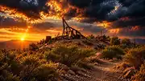

ARIZONA HAUNTING & WEIRD HISTORY
Vulture Mine Ghost Stories

Vulture Mine began with gold. In the 1860s, Henry Wickenburg discovered a rich quartz outcrop in the Arizona desert, and the mine that followed became one of the most important early gold operations in the region. A settlement grew around it, bringing miners, families, businesses and all the noise and danger that came with frontier mining life.
The place also developed a darker reputation. Stories connected with Vulture Mine include accidents, violence, theft and sudden death. Over time, those real hardships became tangled together with local ghost stories and paranormal reports.
Visitors and investigators have described footsteps in empty buildings, voices where no one should be standing, shadowy movement and the uneasy feeling of being watched. Some of the best-known stories center on the old buildings and the hanging tree connected with local tradition.
For anyone searching for haunted places in Arizona, ghost towns, old mines or strange Arizona history, Vulture Mine is one of the state's most atmospheric stops. The weathered buildings, old equipment and desert silence give the site a strong sense of place before the ghost stories are even added.
Roadside Strange documents reported stories, folklore and unusual history. Paranormal reports are presented as reports, not proof.